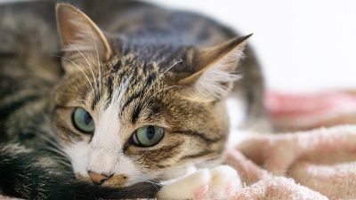

概要説明ニャ
ここは、自分の将来など様々な事に悩んでいる私が、ただ癒しを求めるためだけにネコを取り上げているサイトである。
どんなに辛い時でも、"目の前にネコがいる"と想像するだけで、気持ちが楽になる。
サイトのテーマをネコにすれば、ただひたすらにネコについて毎日考える事が出来る。
要するに、今の私は少々疲れ気味である。
私の妄想に付き合ってくれる人だけに、下のボタンをクリックして欲しい。

作成者 近影
最近、ネコと化した。